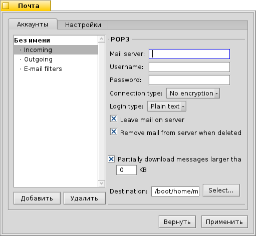
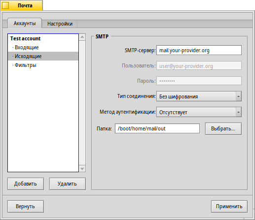
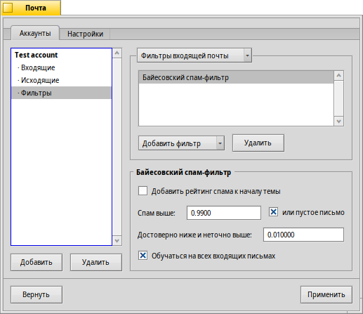
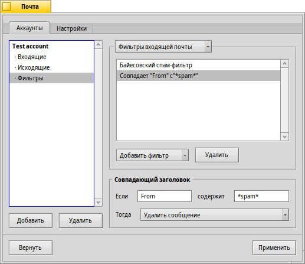
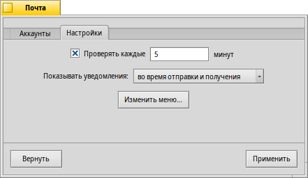
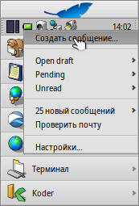

Русский
Русский Français
Français Deutsch
Deutsch Italiano
Italiano Español
Español Svenska
Svenska 日本語
日本語 Українська
Українська 中文 ［中文］
中文 ［中文］ Português
Português English
English| Индексация |
|
Создание нового аккаунта электронной почты Настройки входящей электронной почты Настройки исходящей электронной почты Настройки фильтров электронной почты Настройка почтового сервиса |
 Электронная почта (E-mail)
Электронная почта (E-mail)
| Расположение в Deskbar: | ||
| Расположение в Tracker: | /boot/system/preferences/E-mail | |
| Настройки хранятся по адресу: | ~/config/settings/Mail/* |
В Haiku включена система, которая регулярно доставляет электронную почту через почтовый сервис (также известный как mail_daemon) и сохраняет каждое письмо как один текстовый файл. Она анализирует письмо и заполняет его атрибуты всей необходимой информацией: от кого оно, к кому, тема письма и статус, что оно не прочитано, после чего эти данные становятся доступны вам и любому приложению. Также эта система позволяет легко менять почтовые клиенты, так как все данные и настройки остаются неизменными. Все параметры настраиваются в панели настроек электронной почты (E-Mail).
 Создание нового аккаунта электронной почты
Создание нового аккаунта электронной почты
Пройдем через весь процесс настройки аккаунта электронной почты.
Сперва нажмите на кнопку , чтобы создать новый аккаунт, при этом откроется панель, в которой необходимо заполнить ваши регистрационные данные:
Здесь выбирается Тип аккаунта (Account type), позволяющий , и самый распространённый тип: . После этого выбирается тип получения почты: через протокол POP3 или IMAP.
Теперь введите ваш Адрес электронной почты (E-mail address), Логин (Login name) и Пароль (Password), задайте Имя аккаунта (Account name), которое будет использоваться в Haiku, и ваше Реальное имя (Real name).
Если у вас аккаунт от крупного провайдера электронной почты, то в Haiku уже имеются технические подробности, такие как IP-адреса серверов, и последующая информация заполняется автоматически. Если этого не произошло, то просто следуйте этому руководству и детально заполните все необходимые настройки для вашего аккаунта.
Настройки входящей электронной почты
Кликните на под названием вашего аккаунта для настройки получения электронной почты.
Из выпадающего меню выберите протокол, используемый вашим провайдером (поддерживаются и ).
Далее идёт адрес для входящих писем. Если ваш провайдер использует специфический порт, то его необходимо добавить после адреса через двоеточие. Например: pop.your-provider.org:1400.
Затем введите информацию для авторизации: Имя пользователя (Username) и Пароль (Password), если необходимо, то измените тип входа в систему с (по умолчанию) на для проверки подлинности.
Если вы используете протокол POP3 и получаете почту через этот аккаунт с разных компьютеров, то вы можете активировать опцию . Удаляться письма с сервера будут только при активации опции .
При использовании протокола IMAP вы также можете воспользоваться опцией , назначить для синхронизации с определенной папкой и ее подпапками.
предлагает различные методы для уведомления о приходе новых писем. Сравните эти методы и выберите наиболее подходящий.
Вы можете изменить Расположение (Location) папки "Входящие" (по умолчанию: /boot/home/mail/in/), что может быть полезно, если вы хотите хранить письма из различных аккаунтов раздельно в своих собственных папках. Однако запросы и в этом случае будут работать без проблем.
И последнее: вы можете активировать , которые больше определенного размера. При этом будут приниматься только заголовки писем, и вы сможете решить, загружать ли письмо (и вложения, если они есть) целиком, прочитав его тему и адрес отправителя. Это полезно если у вас медленное соединение и/или платный трафик.
Настройки исходящей электронной почты
Кликните на под именем вашего аккаунта для настройки отправки электронной почты.
Как и для входящей почты, вы можете также изменить Расположение (Location) папки для отправляемых писем (по умолчанию: /boot/home/mail/out/).
Далее идет адрес SMTP-сервера (SMTP Server) для исходящей почты. Как и для сервера входящей почты, вы можете использовать в случае необходимости специфический порт, например: mail.your-provider.org:1200.
Если необходима авторизация, то измените Тип входа (Login Type) на и выше введите имя пользователя и пароль. Другой тип предназначен для провайдеров, которым для проверки почты нужна .
Настройки фильтров электронной почты
Если вы хотите чтобы входящая почта фильтровалась, то кликните на под названием вашего аккаунта для настройки автоматической сортировки. Вы можете добавлять любое количество фильтров, которые будут применяются один за другим, можете менять их местами, перетаскивая мышкой между собой.
Кроме , который используется для обеспечения обратной совместимости, существует два других почтовых фильтра для входящей почты, которые вы можете добавить.
Фильтр спама

Фильтр спама использует статистические методы для выявления нежелательных писем. Он присваивает им значения от 0 до 1 и вы сами решаете, какое значение допустимо для подлинной почты, а что будет считаться спамом.
Вы можете добавить этот спам-рейтинг к началу темы.
Кроме того, фильтр спама может обучаться на всей входящей электронной почте. Конечно, вам придётся научить его разбираться с ошибочными срабатываниями - письмами, которые были по ошибке помечены как спам. Более подробно об этом рассказано в описании приложения Mail.
Следующий фильтр позволяет автоматически сортировать обнаруженный спам.
Сравнение заголовков

Этот фильтр сравнивает заголовок письма с шаблоном и выполняет определённое действие при обнаружении соответствия.
В первом текстовом поле вы определяете какие заголовки сопоставлять. Доступны следующие заголовки:
| имя отправителя. | ||
| адрес электронной почты отправителя. | ||
| ваш адрес электронной почты (различный для каждого аккаунта). | ||
| адрес электронной почты для ответа. | ||
| дата и время получения почты. | ||
| поле для темы письма. | ||
| адрес получающего копию письма. | ||
| название аккаунта электронной почты. | ||
| текущий статус письма: "Прочитано", "Отвечено", "Послано", "Отправлено", "Новое" или любой другой, который вы назначите самостоятельно. Однако, если вы не измените его непосредственно в фильтре, то он всегда будет "Новое" после получения писем почтовым сервисом. | ||
| устанавливается почтовой программой отправителя (например: "Срочно"). | ||
| то же самое, что и "Тема (Subject)", но без приставок типа "Re:" или "Fwd:". | ||
| в зависимости от того, как фильтр спама классифицирует письмо, тут будет пусто (если письмо сомнительно), либо содержаться слово "Подлинное (Genuine)" или "Спам (Spam)". | ||
| это количественная оценка, которую фильтр спама назначил письму. Она показывается в экспоненциальном представлении, где 1.065e-12 преобразовывается в 1.065 поделённое на 10 в 12-ой степени, что в данном случае равняется 0.000000000001065. |
Второе текстовое поле содержит ваш собственный шаблон. Здесь допускаются регулярные выражения, которые предоставляют большую гибкость, но с ними придётся разбираться. Почитайте об этом, оно стоит того, да и простые шаблоны составляются довольно просто.
В выпадающем меню снизу назначается действие при срабатывании шаблона. Можно переместить или удалить письмо, установить ему статус "Прочитано" или любой другой, назначить аккаунт, через который будет сделан ответ.
Фильтры для исходящей почты
На данный момент существует только один фильтр, предназначенный для исходящей почты: fortune. Он вставляет в конец письма забавный или мудрый текст ("Колесо Фортуны"), случайно выбранный перед отправкой. Пример можно увидеть, набрав fortune в терминале.
Настройка почтового сервиса
Теперь, когда серверы входящей и исходящей почты (и, возможно, некоторые фильтры) настроены, вы должны указать почтовому сервису когда и каким образом проверять и загружать почту.
В Проверке почты настраивается интервал, с которым будет проверяться наличие новых писем на почтовом сервере для данного аккаунта.
Если вы выходите в интернет через Dial-up модем, то можете активировать проверку , а также , чтобы избежать частого автоматического дозвона только для проверки почты.
Почтовый сервис имеет окно статуса, которое можно настроить, чтобы оно отображалось , , или .
Убедитесь, что активен, в противном случае вы не сможете принимать и отправлять почту.
откроет папку /boot/home/config/Mail/Menu Links/. Все папки, запросы или ссылки на них, помещенные в эту папку, появятся в контекстном меню значка почтового ящика в трее Deskbar.
В этом меню вы также можете , или .
Значок почтового ящика в трее отображает наличие непрочитанных сообщений (со статусом "Новое"), если таковые имеются.